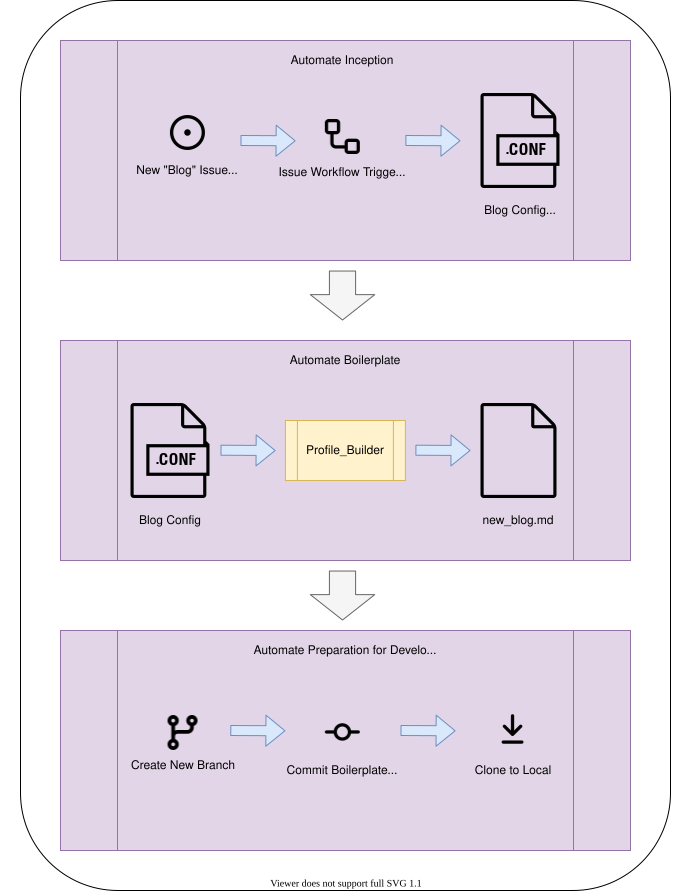
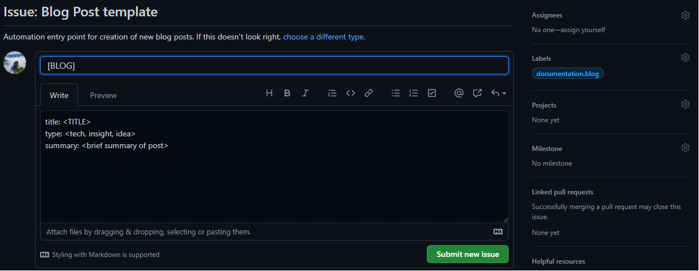
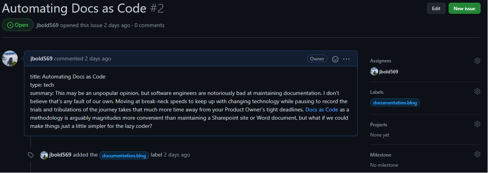
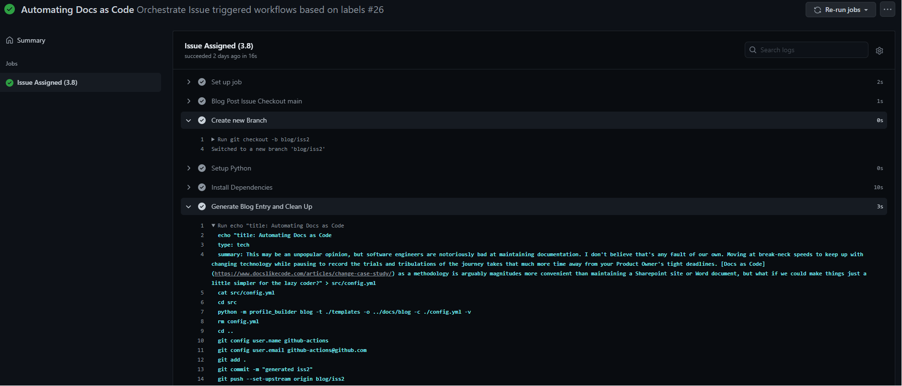

Automating Docs as Code
Posted by Jason Bolden on Jul 17, 2021
This may be an unpopular opinion, but software engineers are notoriously bad at maintaining documentation. I don't believe that's any fault of our own. Moving at break-neck speeds to keep up with changing technology while pausing to record the trials and tribulations of the journey takes that much more time away from your Product Owner's tight deadlines. Docs as Code as a methodology is arguably magnitudes more convenient than maintaining a Sharepoint site or Word document, but what if we could make things just a little simpler for the lazy coder?
Objective
In this article, we're going to explore a handful of methods to make capturing documentation a little more convenient. As a working example, we'll walk through a python module that generates templated blog posts. Github is used to maintain our documentation and actions are leveraged to orchestrate all of our tedious steps.

Attention
There's a lot of moving pieces in this setup. It's important to note that this write up is focused on the art of the possible and snippets shared are enough for a presentable proof of concept.
The Breakdown
Assuming you have a fresh repo ready to go, let's start at the top.
Automating Inception
We're going to use GitHub's functionality as our starting point when creating a new blog, specifically Issues. Just as an issue would typically signal the beginning of a new feature for application development, we're going to treat this as the place where we capture the inspiration for our next blog entry.
Since we're trying to cut out as much manual work as possible, let's take advantage of the template functionality GitHub supports for issues.
1 2 3 4 5 6 7 8 9 10 11 12 | |
Pushing this .md file to your repo under the .github/ISSUE_TEMPLATE directory will result in a pre-filled issue template that presents information we'll need to provide every time we'd like to make a new blog entry. The body is formatted using yaml syntax and the fields will be used as follows:
title- The title of the blog entry.type- This will be more apparent later, but depending on the type of blog entry, a different template will be used.summary- This will appear as the first paragraph in the new entry.

Important to note is the label used for this template. This will be used in the workflow that gets triggered next.
What happens when we create our new issue? Nothing, without a workflow defined. We want this workflow to trigger when a new Issue has been assigned.
1 2 3 4 5 6 7 8 9 10 11 12 13 14 | |
Now we can use that templated information within a linux environment to take us into phase 2 of our automation workflow.
1 2 3 4 | |
Note
The job for building a new blog entry only runs if the issue that triggered the GitHub workflow has a label of documentation.blog.
Automating Boilerplate Code

With a brand new issue created, for a moment assume we had to manually create this new blog entry. For our blog, we're using mkdocs. We would need to spend valuable time adding the following to our directory structure:
- New
.mdfile under the blog directory - Type the file name with the correct naming convention
- Add the new file to the
mkdocs.ymlfile'snavdefinition
1 2 3 4 5 6 7 8 9 10 | |
1 2 3 4 5 6 7 | |
These steps may appear small and low effort, but over time they accumulate and become the annoyances that cause one to avoid capturing documentation all together. We're going to address this by using some python code.
Attention
The code referenced in this post are snippets of the profile_builder module used to create it. The entire module is outside of the scope of this discussion, but feel free to explore how the profile_builder works under the hood as an exercise.
The logic of the profile_builder is straightforward:
- Load our config file as a dictionary,
builder() - Load the appropriate template file (based on the blog type),
generate_blog(...) - Create the filenames and output directories based on date and config parameters, lines 5-8
1 2 3 4 5 6 7 8 9 | |
Note
Notice that we've parameterized the template filename using the type variable from the issue config.
1 | |
Jinja is a great template engine for programmatically creating documents. Because blogs are pretty much rinse and repeat of the same formatting, why should we spend the time typing it out every time (or even copy pasting for that matter)? Jinja allows us to use the dict elements in our config variable to populate the {{...}} expression fields of our template. Once generated, our new entry is written to the dest_file directory.
1 2 3 4 5 6 7 8 9 10 11 12 13 14 15 16 17 18 19 20 21 22 23 24 25 26 | |
Lastly, we need to update mkdocs.yml file to include our new 2021-07-17-automating-docs-as-code.md file.
1 2 3 4 5 6 7 | |
Automating Dev Prep
We're almost done. The only thing remaining is to stitch our profile_builder into our issues_automation workflow and create our development branch. Again, we could create a new branch manually and run the profile_builder module from the command line on a our local, but where's the fun in that?
1 2 3 | |
1 2 3 4 5 6 7 8 9 10 11 12 13 | |
Blog issue, fill in the details, assign it to yourself, and switch to the newly created blog branch.

Conclusion
At first glance, this may seem like overkill for a simple blog. A Wordpress or Squarespace site would be much easier to put together. So instead, let's think about a repo that holds engineering artifacts for the application your team supports. Or how about a knowledge base of training material for your team of developers. Incident response playbooks for your Security Operations Center, IT Help Desk procedures, etc.
This workflow allows for someone to suggest an addition to the team's documentation, and automate a lot of the repetitive actions that demotivates the individual from creating the documentation in the first place. In addition to the bonus of treating the docs as managed source code, the GitHub repo facilitates a collaborative environment so documentation is less likely to be created in a vacuum without peer review.